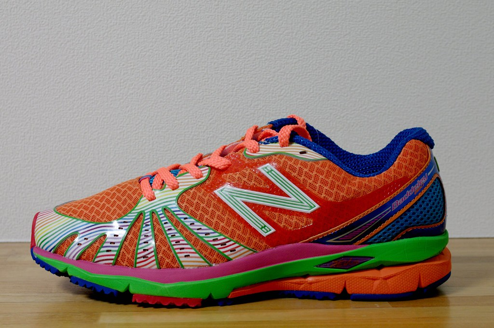

So you want to run fast? Like the idea of finishing in the front of the pack? You can do so! There's just a few items to knock off the list before this can happen.
1: Build a solid running base
You wouldn't build a huge 2nd-floor bathroom unless it was over a strong foundation first, right? Before attempting your all-out 5k, you should at least be running 25+ miles a week. These do not need to be hard, fast miles. They should be miles at a pace you could hold a (uncomfortable) conversation. Build up to this training volume slowly to help prevent injury.
2: Hill, hills, hills
Once you're running a good amount of miles per week, you will want spend a day or two charging up difficult inclines. This imitates the effect of running fast, yet isn't as hard on the knees.
3: Buy good running shoes
Unless you're that one guy going for the Croc 5k world record, it's a good idea to invest in a quality pair of trainers. New Balance, Adidas, Hoka, Mizuno and Brooks are reliable brands to keep your feet fast and protected.
 Shop New Balance Shoes here!4: Eat a balanced diet
This is the part most people neglect, yet foster surprise when their dedicated training doesn't pan out like they envisioned. This is not to say you need to put yourself on a water fast or crash diet during your training regimen. However, fast food and processed sugar should be extremely limited, if not eliminated.
Don't have time to prep healthy meals? Let Busy Body Meals do the ground work for you!